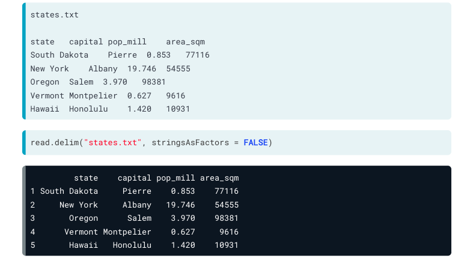
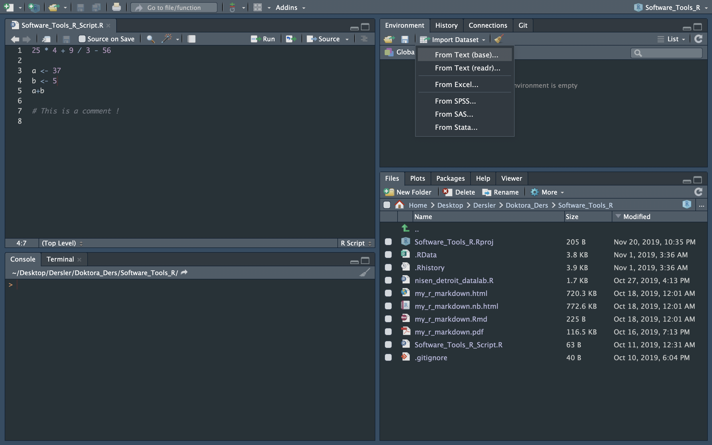
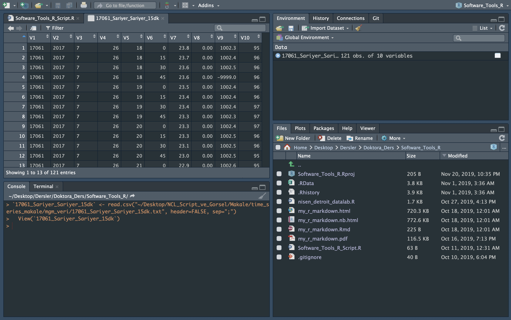
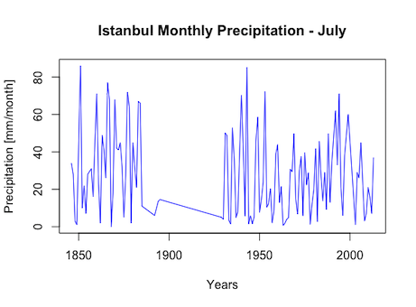
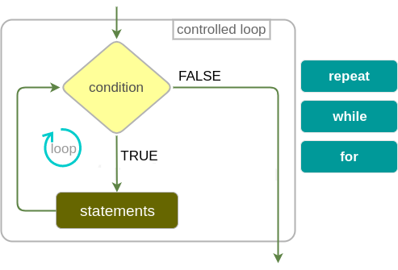
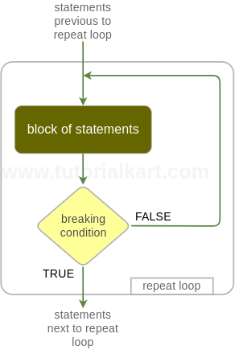
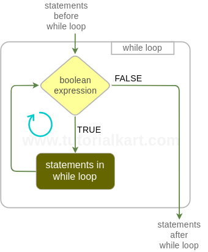
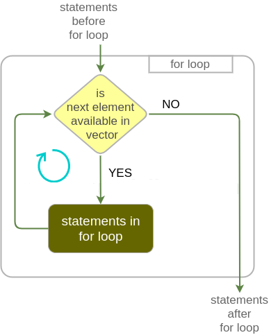
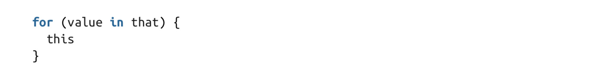

R Programming
R Programming - Conditions
- Comparison Operators
- equal (==)
- not equal (!=)
- greater or equal to (>=)
- lower or equal to (<=)
- Logical Operators
- the and operator (&)
- the or operator (|)
- the not operator (!)
- if (Stand-Alone) Statement
- else Statement
- ifelse Statement
TRUE & TRUE
TRUE & FALSE
TRUE | FALSE
!TRUE
2 == 3
5 < 6
c(1,4) >= 6
9 != 8
5 < 6 & 9 != 8score <- 80
exam_no <- 2
score >= 75 | exam_no == 1
score>=75 & score<90 | exam_no==1if (Stand-Alone) Statement
The if statement executes a chunk of code if and only if a defined condition is TRUE, which looks something like this:

if(TRUE) message("It was true!")## It was true!if(FALSE) message("It wasn't true!")
if(TRUE&FALSE) message("It was true!")
if(TRUE|FALSE) message("It doesn't matter")## It doesn't mattera <- 3
num <- 4
if ( a != num ) {
print(a)
}## [1] 3a <- 3
num <- 4
if ( a <= num ) {
a <- a ^ 2
print(a)
}## [1] 9if (Stand-Alone) Statement

num <- -1
if ( num < 0 ) {
print("num is negative.")
print("Don't worry, I'll fix it.")
num <- num * -1
print("Now num is positive.")
}## [1] "num is negative."
## [1] "Don't worry, I'll fix it."
## [1] "Now num is positive."num## [1] 1if (Stand-Alone) Statement

if (Stand-Alone) Statement

Try it
Is it in the range ?
x <- 6
y <- 2
if ( x > 3 & x == 7 ) {
print("It is in the range")
z <- x + y
print(z)
}
Is it in the range ?
x <- 6
y <- 2
if ( x > 3 & x <= 7 ) {
print("It is in the range")
z <- x + y
print(z)
}## [1] "It is in the range"
## [1] 8Try it
You have a fruit which is yellow.
Is that a banana?
Or an orange ?
banana <- "yellow"
my_fruit <- "yellow"
if ( my_fruit == banana ) {
print("Your fruit might be a banana")
}
orange <- "orange"
my_fruit <- "yellow"
if ( my_fruit == orange ) {
print("Your fruit is not a banana")
}
else - Statement
If you want something different to happen when the condition is FALSE, you can add an else declaration.

if(FALSE)
{
message("This won't execute...")
} else
{
message("but this will.")
}## but this will.a <- 3.5
b <- 0.5
if (a <= 0.5) {
c <- b + 1
print(c)
} else {
c <- b
print(c)
}## [1] 0.5Let’s say we have two conditions. Rainy or Shiny.
And you have recorded 4 mm precipitation.
weather <- # mm # fill this number
if ( ) { # fill this condition, using weather
print("it is rainy")
} else {
print("it is shiny")
}Report the weather. Is it rainy ?

Let’s say we have two conditions. Rainy or Shiny.
And you have recorded 4 mm precipitation.
weather <- 4 # mm # fill this number
if ( weather > 0 ) { # fill this condition, using weather
print("it is rainy")
} else {
print("it is shiny")
}## [1] "it is rainy"-else - and -else if- Statement

If your situation has more than two mutually exclusive cases, use else and if statements together.

a <- 1 # team 'a' has 1 goal
b <- 1 # team 'b' has 1 goal
if (a > b) {
print("A wins!")
} else if (a < b) {
print("B wins!")
} else {
print("Tie.")
}## [1] "Tie."What do you gonna do ? Eating, Sleeping, or Reading?
When do you want to read ?
- When you are hungry, or sleepy. No.
- When you are not hungry and sleepy. Yes.
So, start to think about your feelings about sleeping or eating to decide whether reading or not.
-else - and -else if- Statement
What do you gonna do ? Eating, Sleeping, or Reading?
Let’s start with define the conditions
If you are hungry –> eat
If you are sleepy –> sleep
- If you are hungry and sleepy –> ?
- If you are hungry but not sleepy –> ?
- If you are not hungry but sleepy –> ?
- If you are not hungry and sleepy –> ?
What do you gonna do ? Eat, Sleep or Read?
- If you are hungry and sleepy –> eat
- If you are hungry but not sleepy –> eat
- If you are not hungry but sleepy –> sleep
- If you are not hungry and sleepy –> read
Let’s define your feelings. Yes (TRUE,1) or No (FALSE,0)
- Are you hungry ?
- Are you sleepy ?
hungry <- # TRUE or FALSE (1 or 0)
sleepy <- # TRUE or FALSE (1 or 0)
What do you gonna do ? Eat, Sleep or Read?
- If you are hungry and sleepy –> eat
- If you are hungry but not sleepy –> eat
- If you are not hungry but sleepy –> sleep
- If you are not hungry and sleepy –> read
hungry <- TRUE # Yes , TRUE , 1
sleepy <- TRUE # Yes , TRUE , 1
if ( ) {
print(" ")
} else if ( ) {
print(" ")
} else if ( ) {
print(" ")
} else {
print(" ")
}What do you gonna do ? Eat, Sleep or Read?
- If you are hungry and sleepy –> eat
- If you are hungry but not sleepy –> eat
- If you are not hungry but sleepy –> sleep
- If you are not hungry and sleepy –> read
hungry <- TRUE # Yes , TRUE , 1
sleepy <- TRUE # Yes , TRUE , 1
if ( ) { # hungry is TRUE and sleepy is TRUE
print(" ")
} else if ( ) { # hungry is TRUE and sleepy is FALSE
print(" ")
} else if ( ) { # hungry is FALSE and sleepy is TRUE
print(" ")
} else { # hungry is FALSE and sleepy is FALSE
print(" ")
}What do you gonna do ? Eat, Sleep or Read?
- If you are hungry and sleepy –> eat
- If you are hungry but not sleepy –> eat
- If you are not hungry but sleepy –> sleep
- If you are not hungry and sleepy –> read
hungry <- TRUE # Yes , TRUE , 1
sleepy <- TRUE # Yes , TRUE , 1
if (hungry==TRUE & sleepy==TRUE) { # hungry is TRUE and sleepy is TRUE
print(" ")
} else if (hungry==TRUE & sleepy==FALSE) { # hungry is TRUE and sleepy is FALSE
print(" ")
} else if (hungry==FALSE & sleepy==TRUE) { # hungry is FALSE and sleepy is TRUE
print(" ")
} else { # hungry is FALSE and sleepy is FALSE
print(" ")
}## [1] " "What do you gonna do ? Eat, Sleep or Read?
- If you are hungry and sleepy –> eat
- If you are hungry but not sleepy –> eat
- If you are not hungry but sleepy –> sleep
- If you are not hungry and sleepy –> read
hungry <- TRUE # Yes , TRUE , 1
sleepy <- TRUE # Yes , TRUE , 1
if (hungry==TRUE & sleepy==TRUE) { # hungry is TRUE and sleepy is TRUE
print("EAT")
} else if (hungry==TRUE & sleepy==FALSE) { # hungry is TRUE and sleepy is FALSE
print("EAT")
} else if (hungry==FALSE & sleepy==TRUE) { # hungry is FALSE and sleepy is TRUE
print("SLEEP")
} else { # hungry is FALSE and sleepy is FALSE
print("READ")
}## [1] "EAT"Nesting and Stacking Statements
An if statement can be placed in another if statement. In the editor, modify the mynumber example once more as follows:

Nesting and Stacking Statements

Nesting and Stacking Statements

Nesting and Stacking Statements

Nesting and Stacking Statements

Practice - Conditions - TRUE and FALSE
- Print this if it is TRUE. “This message will print!”
if (...) {
print(...)
} - Go to sleep if it is TRUE, else wake up.
if (...) {
print("Go to sleep!")
} else {
print("Wake up!")
}- The variable message to “I print this when it is false!” when the condition is FALSE.
if (...) {
print("I print this when it is true!")
} else {
print(...)
}Practice - Conditions - Logical Op
ROLE PLAY : You are a CAR, and you are going on the road.

Problem : BUT ;
- Traffic (stop) light turned to orange
- Two pedestrians started to walk across the road
How can you move ?
- Waiting for the traffic (stop) light turns to green
- Waiting for pedestrians pass to the across of the road
Parameters :
- The COLOR of the traffic (stop) light
- The NUMBER of pedestrians
You are a CAR, BUT ;
- Traffic (stop) light turned to orange
- Two pedestrians started to walk across the road
Parameters :
- The COLOR of the traffic (stop) light
- The NUMBER of pedestrians
First, define the situation
Traffic_Stop_Light <- 'orange'
Number_of_Pedestrians <- 2You are a CAR, BUT ;
Traffic_Stop_Light <- 'orange'
Number_of_Pedestrians <- 2Second, define the conditions to move again
Traffic_Stop_Light : ?
Number_of_Pedestrians : ?Practice - Conditions - Logical Op
Situation
Traffic_Stop_Light <- 'orange'
Number_of_Pedestrians <- 2Condition
Traffic_Stop_Light : 'green'
Number_of_Pedestrians : 0Remember rules
if (...) {
print(...);
} else {
print(...);
}Situation
Traffic_Stop_Light <- 'orange'
Number_of_Pedestrians <- 2Condition
Traffic_Stop_Light : 'green'
Number_of_Pedestrians : 0Remember rules
if ( & ) {
print('Go!');
} else {
print('STOP');
}Situation
Traffic_Stop_Light <- 'orange'
Number_of_Pedestrians <- 2Condition
Traffic_Stop_Light : 'green'
Number_of_Pedestrians : 0Remember rules
if (Traffic_Stop_Light=='green' & Number_of_Pedestrians==0) {
print('Go!');
} else {
print('STOP');
}## [1] "STOP"Practice - Conditions - Logical Op
Problem : You want to enjoy, and let’s say the day is;
day <- "Friday"What do you gonna do if it is Friday.
if (...) {
print('Enjoy the weekend!')
} else {
print('Do some work.')
}day <- "Friday"What do you gonna do if it is Friday.
if ( day... | day... ) {
print('Enjoy the weekend!')
} else {
print('Do some work.')
}Practice - Conditions - Logical Op
ANSWER : You want to enjoy, and let’s say the day is;
day <- "Friday"It is okay, you can fun if it is weekend.
if (day == 'Saturday' | day == 'Sunday') {
print('Enjoy the weekend!')
} else {
print('Do some work.')
}## [1] "Do some work."Practice - Conditions - Logical Op
Problem : You want to go out and your question is
“Should I take an umbrella?”
Note : There are two variables in your code,
“sky” (character) and “high_chance_of_rain” (logical)
Check, if “sky” is equal to “cloudy” and, whether there is a “high_chance_of_rain”.
If both are true, the code should print: “Take umbrella!”
Otherwise, the code should print: “No need for umbrella!”
Based on the condition, what is the answer?
RADIO: The sky is cloudy and the chance of rain is high.
Your conditions, for two variables
# you want to go out and your question is "Should I take an umbrella?"
sky <-
high_chance_of_rain <- Practice - Conditions - Logical Op
# you want to go out and your question is "Should I take an umbrella?"
sky <- "cloudy"
high_chance_of_rain <- TRUEPractice - Conditions - Logical Op
# you want to go out and your question is "Should I take an umbrella?"
sky <- "cloudy"
high_chance_of_rain <- TRUEif (...) {
print("...")
} else {
print("...")
}if (...) {
print("Take umbrella!")
} else {
print("No need for umbrella!")
}# you want to go out and your question is "Should I take an umbrella?"
sky <- "cloudy"
high_chance_of_rain <- TRUEif ( sky... & high_chance_of_rain... ) {
print("Take umbrella!")
} else {
print("No need for umbrella!")
}Practice - Conditions - Logical Op
# you want to go out and your question is "Should I take an umbrella?"
sky <- "cloudy"
high_chance_of_rain <- TRUE
if (sky == "cloudy" & high_chance_of_rain == TRUE) {
print("Take umbrella!")
} else {
print("No need for umbrella!")
}## [1] "Take umbrella!"Practice - R Language
Objectives
Manage Working Directory
Find the Data
Read Data with utils (R utility functions)
Practice - R Language
Manage Working Directory
- getwd() - get working directory
- list.files() # or dir()
getwd()## [1] "/Users/emirtoker/Desktop/Memurluk/Software_Tools_for_Earth_&_Environmental_Science/Software_Tools_R_Github"list.files()## [1] "_site.yml"
## [2] "about.Rmd"
## [3] "additional_course.Rmd"
## [4] "book.Rmd"
## [5] "code.Rmd"
## [6] "data_download.Rmd"
## [7] "data_sources.Rmd"
## [8] "data_structure.Rmd"
## [9] "data.Rmd"
## [10] "datacamp.Rmd"
## [11] "dc_logo1.png"
## [12] "dc_logo2.png"
## [13] "dc_logo3.png"
## [14] "dc_logo4.png"
## [15] "dc_logo5.png"
## [16] "dc_logo6.png"
## [17] "docs"
## [18] "index.Rmd"
## [19] "LICENSE"
## [20] "my_r_notebook.Rmd"
## [21] "ncl.Rmd"
## [22] "netcdf.Rmd"
## [23] "new_accounts.Rmd"
## [24] "new_data.csv"
## [25] "Presentation"
## [26] "python.Rmd"
## [27] "r_and_rstudio.Rmd"
## [28] "R_Home_Website"
## [29] "R_Interactive_Samples_with_Shiny_files"
## [30] "R_Interactive_Samples_with_Shiny.html"
## [31] "R_Interactive_Samples_with_Shiny.Rmd"
## [32] "R_Interactive_Training"
## [33] "r_language.Rmd"
## [34] "r_probability.Rmd"
## [35] "r_programming.Rmd"
## [36] "r_statistics.Rmd"
## [37] "README.html"
## [38] "README.md"
## [39] "rsconnect"
## [40] "Software_Tools_for_Earth_and_Environmental_Science_Syllabus_2020_21_Fall.png"
## [41] "Software_Tools_for_Earth_and_Environmental_Science_Syllabus.png"
## [42] "Software_Tools_R_Github.Rproj"
## [43] "syllabus.Rmd"
## [44] "unix_linux.Rmd"Practice - R Language
Manage Working Directory
- setwd() - set working directory
# 1
setwd("/Users/emirtoker/Downloads/")
# 2
getwd()## [1] "/Users/emirtoker/Downloads"list.files()## [1] "[15200442 - Journal of Climate] New Insights into the Ocean Heat Budget Closure Problem from Analysis of the SOC Air–Sea Flux Climatology.pdf"
## [2] "[World soils book series] Akça, Erhan_ Günal, Hikmet_ Kapur, S - The soils of Turkey (2018, Springer) - libgen.lc.pdf"
## [3] "1-s2.0-S0967064516302144-main.pdf"
## [4] "129673100.pdf"
## [5] "2014_Book_UsingRForStatistics.pdf"
## [6] "2020-12-23 18-01-23.mkv"
## [7] "255 kodlu taşınırlar.xls"
## [8] "255 kodlu taşınırlar(1).xls"
## [9] "5cf30bfa-7545-4956-91d2-ffcc7761cd42.png"
## [10] "601201020-89206-2020-12-18-09-37-16.html"
## [11] "601201020-89206-2020-12-18-09-37-16.rmd"
## [12] "601202005-89210-2020-12-18-23-45-06.rar"
## [13] "AYBE İklim ve Deniz Ana Bilim Dalı Tanıtım Videosu Akışı .docx"
## [14] "AYBE_İklim_Deniz_ABD_Emir .docx"
## [15] "cru_1901_2012_tmp_TR.nc"
## [16] "ek(1).pdf"
## [17] "FileZilla_3.52.0.5_macosx-x86.app.tar.bz2"
## [18] "JEOA137.pdf"
## [19] "Mediterranean_Basin_Hotspot_2005_Print.tif"
## [20] "MT_Project"
## [21] "S0169809520313107.txt"
## [22] "Software_Tools_Homework_III_Emir.html"
## [23] "turkiye"
## [24] "turkiye.zip"file.path("~","Users","emirtoker","Downloads","-this_is_my_file.csv")## [1] "~/Users/emirtoker/Downloads/-this_is_my_file.csv"Practice - R Language
Find the Data
- file.path()
# Option 1
# setwd("/Users/emirtoker/Downloads/")
# read.csv("-this_is_my_file.csv")
# Option 2
path <- file.path("~","Users","emirtoker","Downloads","-this_is_my_file.csv")
path## [1] "~/Users/emirtoker/Downloads/-this_is_my_file.csv"# read.csv(path)Practice - R Language
Read Data
with utils (R utility functions)
- read.csv() - Comma Seperated Value
- read.delim() - Tab Delimited Data
- read.table() - Exocit file format
Practice - R Language
Read Data with utils (R utility functions)
read.csv() - Comma Seperated Value

Practice - R Language
Read Data with utils (R utility functions)
read.delim() - Tab Delimited Data

Practice - R Language
Read Data with utils (R utility functions)
read.table() - Exocit file format


Practice - R Language
BONUS - Import Dataset

Practice - R Language
BONUS - Import Dataset

Practice - R Language
BONUS - Import Dataset

Practice - R Language
BONUS - Import Dataset

Practice - R Language
BONUS - Import Dataset
17061_Sariyer_Sariyer_15dk<- read.csv( “~/Desktop/NCL_Script_ve_Gorsel/Makale/ time_series_makale/mgm_veri/17061_Sariyer_Sariyer_15dk.txt”, header=FALSE, sep=“;”)View(
17061_Sariyer_Sariyer_15dk)
~
Practice - R Language
Manage Directory, Find and Read Data
Instructions
- Go to main webpage of course
- Open Data “Istanbul_Goztepe_Precipitation_1846-2013_Monthly” (.dat) LINK
- Copy and Paste it in your “Downloads” directory in a text file
- Open your R Studio
We Have 4 Ways to Read
Practice - R Language
Manage Directory, Find and Read Data
Instructions - WAY 1 - GO TO FILE
- Check your Project Name and your Working directory
- Go to “Downloads” directory in R Studio
- List files and Read Data with three different read functions
- read.csv()
- read.delim()
- read.table()
- Choose the best
- Assign your data as “precip_1”
Caraful about header, seperater and missing data
look at the main web page for examples
Practice - R Language
Manage Directory, Find and Read Data
Instructions - WAY 2 - CALL THE FILE
- Go Back to your Working directory
- Define your file path with file.path()
- Assign the path a new variable as “path_my_file”
- Use your best read() function
- Read the file with “path_my_file”
- Assign your data as “precip_2”
path_my_file <- file.path("~","Downloads")
precip_2 <- read.table(path_my_file)Practice - R Language
Manage Directory, Find and Read Data
Instructions - WAY 3 - IMPORT THE FILE
- Use “Import Datase”
- Assign your data as “precip_3”
Practice - R Language
Manage Directory, Find and Read Data
Instructions - WAY 4 - DOWNLOAD THE FILE
- Copy the LINK of data
- Use your best read() function
- Read the file with this function and LINK
- Assign your data as “precip_4”
precip_4 <- read.table("link")Practice - R Programming
Practice - R Programming
Objectives
Identify the Data
Indexing
Use Condition Statements
Plot
Practice - R Programming
Meet with the Data
- Look at structure
- Learn attributes and dimensions
- Rename attributes
? dimensions, variables and types ?
month.name
month.abb
attributes(precip_2)
attributes(precip_2)[1]
attributes(precip_2)[[1]]
attributes(precip_2)[[1]] <- c("Year",month.abb)
attr(precip_2,"names") <- c("Year",month.abb)
attr(precip_2,"row.names") <- 1846:2013
precip_2a <- precip_2[-1]
head(precip_2a)Practice - R Programming
Clear NA and Choose Colomn
- Print “precip_2a”
- Delete rows which include NA ( na.omit() )
- Assign it as “precip_2b”
- Select summer season
- Assign it as “precip_2b_summer”
precip_2b <- na.omit(precip_2a)
precip_2b_summer <- precip_2b[ ,6:8]Practice - R Programming
Use Condition Statements - if
- Compare June Mean Precipitation with July
- IF June mean precipitation is LOWER than July then print “June has low precipitation.”
mean_jun <- mean(precip_2b_summer$Jun)
mean_jul <- mean(precip_2b_summer$Jul)
if (mean_jun > mean_jul) {
print("June has low precipitation.")
}
colMeans(precip_2b_summer)
Practice - R Programming
Use Condition Statements - else
- IF June mean precipitation is LOWER than July then print “June has low precipitation.”
- ELSE print “June has high precipitation.”
- Calculate mean of each month ( colMeans() )
mean_jun <- mean(precip_2b_summer$Jun)
mean_jul <- mean(precip_2b_summer$Jul)
if (mean_jun < mean_jul) {
print("June has low precipitation.")
} else {
print("June has high precipitation.")
}
colMeans(precip_2b_summer)Practice - R Programming
Plot
Problem : Extremes and Outliers
- Plot precipitation for June
- Add title and unit
plot(precip_2b_summer$Jun,
xlab = "Years",
ylab = "Precipitation [mm/month]",
main = "Istanbul Monthly Precipitation - June",
type = "l",
col="blue")Practice - R Programming
Plot
Problem : Extremes and Outliers
- Edit x-axis, which years are they ?
- What about August ?
attr(precip_2b_summer,"row.names")
x_years <- attr(precip_2b_summer,"row.names")
plot(x_years,
precip_2b_summer$Jun,
xlab = "Years",
ylab = "Precipitation [mm/month]",
main = "Istanbul Monthly Precipitation - June",
type = "l",
col="blue")
plot(precip_2b_summer$Aug)Practice - R Programming
Plot
Problem : Extremes and Outliers
 
Homework-2
R Programming - Loops

Loops are R’s method for repeating a task, which makes them a useful tool for programming simulations.
R Programming - repeat Loops

repeat
{
message("Happy Groundhog Day!")
break
}R Programming - repeat Loops
coins <- 3
game <- 0
repeat
{
game <- game + 1
coins <- coins -1
print(game)
print("nice try, play again")
if (coins==0) {
break
}
}## [1] 1
## [1] "nice try, play again"
## [1] 2
## [1] "nice try, play again"
## [1] 3
## [1] "nice try, play again"[1] 1
[1] "nice try, play again"
[1] 2
[1] "nice try, play again"
[1] 3
[1] "nice try, play again"R Programming - while Loops
While loops are like backward repeat loops.

while(condition) {
conditional statement
}R Programming - while Loops
coins <- 3
game <- 0
while(coins >= 0)
{
coins <- coins -1
game <- game + 1
print(game)
print("nice try, play again")
}## [1] 1
## [1] "nice try, play again"
## [1] 2
## [1] "nice try, play again"
## [1] 3
## [1] "nice try, play again"
## [1] 4
## [1] "nice try, play again"R Programming - for Loops
The third type of loop is to be used when you know exactly how many times you want the code to repeat.

R Programming - for Loops
 
for(i in 1:2) {
message("just say it ", i, " times")
}## just say it 1 times## just say it 2 timesR Programming - for Loops
for(i in c(1,2) ) {
message("just say it ", i, " times")
}## just say it 1 times## just say it 2 timesfor(i in c("apple","banana") ) {
message("just say it ", i, " times")
}## just say it apple times## just say it banana timesit is related with length of vector
R Programming - for Loops
month.name## [1] "January" "February" "March" "April" "May" "June"
## [7] "July" "August" "September" "October" "November" "December"for(month in month.name) {
message("The month of ", month)
}## The month of January## The month of February## The month of March## The month of April## The month of May## The month of June## The month of July## The month of August## The month of September## The month of October## The month of November## The month of DecemberR Programming - apply Loops
- The apply() functions form the basis of more complex combinations and helps to perform operations with very few lines of code.
- More specifically, the family is made up of the apply(), lapply() , sapply(), vapply(), mapply(), rapply(), and tapply() functions.
apply(X, MARGIN, FUN, ...)
# X is an array or a matrix, dim(X) must have a positive length
# MARGIN=1, it applies over rows, whereas with
# MARGIN=2, it works over columns. Note that when you use the construct
# MARGIN=c(1,2), it applies to both rows and columns
# FUN, which is the function that you want to apply to the data. apply(precip_2b_summer, MARGIN=1, mean)
apply(precip_2b_summer, MARGIN=2, mean)
apply(precip_2b_summer, MARGIN=c(1,2), mean)
apply(precip_2b_summer, MARGIN=c(2,1), mean)R Programming - apply Loops

R Programming - lapply Loops

lapply(precip_2b_summer,"[",1)
sapply(precip_2b_summer,"[",1)Practice : Write A Function - 3
- I have four different numbers w,x,y,z
- I want to define them WHEN I am using the function
- I want to calculate w+x IN function
- I want to calculate y*z IN function
- I want to print the results IN function
my_fun3 <- function(w,x,y,z){
result1 <- w+x
result2 <- y*z
print(result1)
print(result2)
}
# my_fun3()
my_fun3(1,2,3,4)## [1] 3
## [1] 12BONUS
- menu() function
menu(c("Yes", "No"), title="What dou you think?")
menu1 <- menu(c("Yes", "No"), title="What dou you think?")
menu1
menu(c("Option1","Option2","Option3","Option4"), title="Choose one of them")
menu2 <- menu(c("Option1","Option2","Option3","Option4"), title="Choose one of them")
menu2
- I have two different numbers x,y
- I want to define them WHEN I am using the function
- I want to define ONE calculation DURING the function
- I want to print the results IN function
my_fun3 <- function(x,y){
math <- menu(c("+", "-", "*", "/"), title="Which calculation?")
if (math==1) {
result <- x+y
} else if ( ) {
} else if ( ) {
} else {
}
print(result)
}Practice : Write An IF-Statement - 2

- Two answers
- Two options
- One Result
worry_flow <- function() {
answer1 <- menu(c("Yes","No"), title = "Do you have a problem in your life ?")
if (answer1 == 2) {
print("Then Don't Worry")
}
else {
answer2 <- menu(c("Yes","No"), title = "Can you do something about it ?")
if(answer2 == 1){
print("Then Don't Worry")
}
else{
print("Then Don't Worry")
}
}
require(tcltk)
msgBox <- tkmessageBox(title = "Title of message box",
message = "THEN WYH WORRY!",
icon = "info",
type = "ok")
}